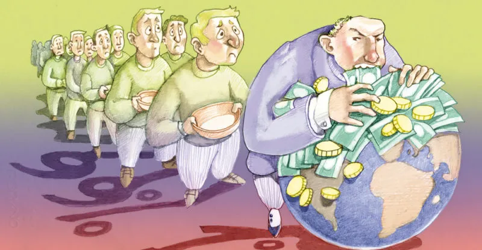
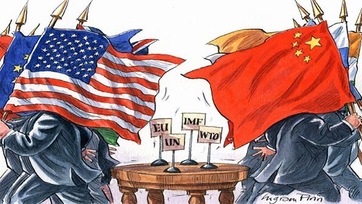

A Nova Ordem Mundial refere-se ao cenário geopolítico que emergiu após o fim da Guerra Fria em 1991, com o colapso da União Soviética e a consolidação dos Estados Unidos como a principal superpotência global. Esse termo, popularizado na época pelo presidente norte-americano George H. W. Bush, descreve uma nova era de relações internacionais marcada pela cooperação entre as nações, com maior ênfase no multilateralismo, nas instituições internacionais, e na promoção de um sistema baseado em regras e na segurança coletiva. A queda do muro de Berlim e a dissolução do bloco soviético também contribuíram para a expansão de democracias e de economias de mercado ao redor do mundo.
Um dos pilares dessa Nova Ordem Mundial foi a globalização, caracterizada pela crescente interconexão econômica, cultural e política entre as nações. O comércio internacional se expandiu, facilitado por organizações como a Organização Mundial do Comércio (OMC), e o avanço da tecnologia da informação e comunicação acelerou o processo de integração global. Junto com isso, o neoliberalismo se consolidou como o modelo econômico dominante, defendendo o livre mercado, a desregulamentação e a privatização de empresas estatais. Diversos países adotaram políticas de abertura econômica e reformas estruturais, promovendo crescimento, mas também aumentando as desigualdades sociais em algumas regiões.
Apesar da esperança de um mundo mais pacífico, a Nova Ordem Mundial não foi isenta de conflitos. Com o fim da Guerra Fria, novos focos de tensão emergiram, como as Guerras na ex-Iugoslávia e os conflitos étnicos em Ruanda e Darfur. Além disso, os Estados Unidos, frequentemente em parceria com outras nações, se envolveram em diversas intervenções militares, como na Guerra do Golfo (1991), para garantir seus interesses estratégicos e econômicos, especialmente no Oriente Médio. O atentado de 11 de setembro de 2001 marcou uma nova fase de confrontos, levando às Guerras no Afeganistão (2001) e no Iraque (2003), em nome da luta contra o terrorismo.
Ao longo das décadas seguintes, a China emergiu como uma potência econômica e política global, desafiando a hegemonia dos EUA. Com um crescimento econômico vertiginoso, reformas econômicas e investimentos em infraestrutura, a China se tornou um ator central na economia mundial e começou a expandir sua influência política, especialmente em regiões como a África e o Sudeste Asiático. A ascensão chinesa e a recuperação da Rússia sob Vladimir Putin deram início a um cenário de multipolaridade, com várias potências regionais influenciando a política global.
A Nova Ordem Mundial também enfrentou grandes crises, como a crise financeira de 2008, que abalou economias ao redor do mundo, e a crise climática, que tem mobilizado esforços globais em busca de soluções sustentáveis. A governança internacional, representada por instituições como a ONU, tem tentado enfrentar desafios crescentes, como o aumento das migrações, pandemias como a COVID-19, e a proliferação de armamentos nucleares.